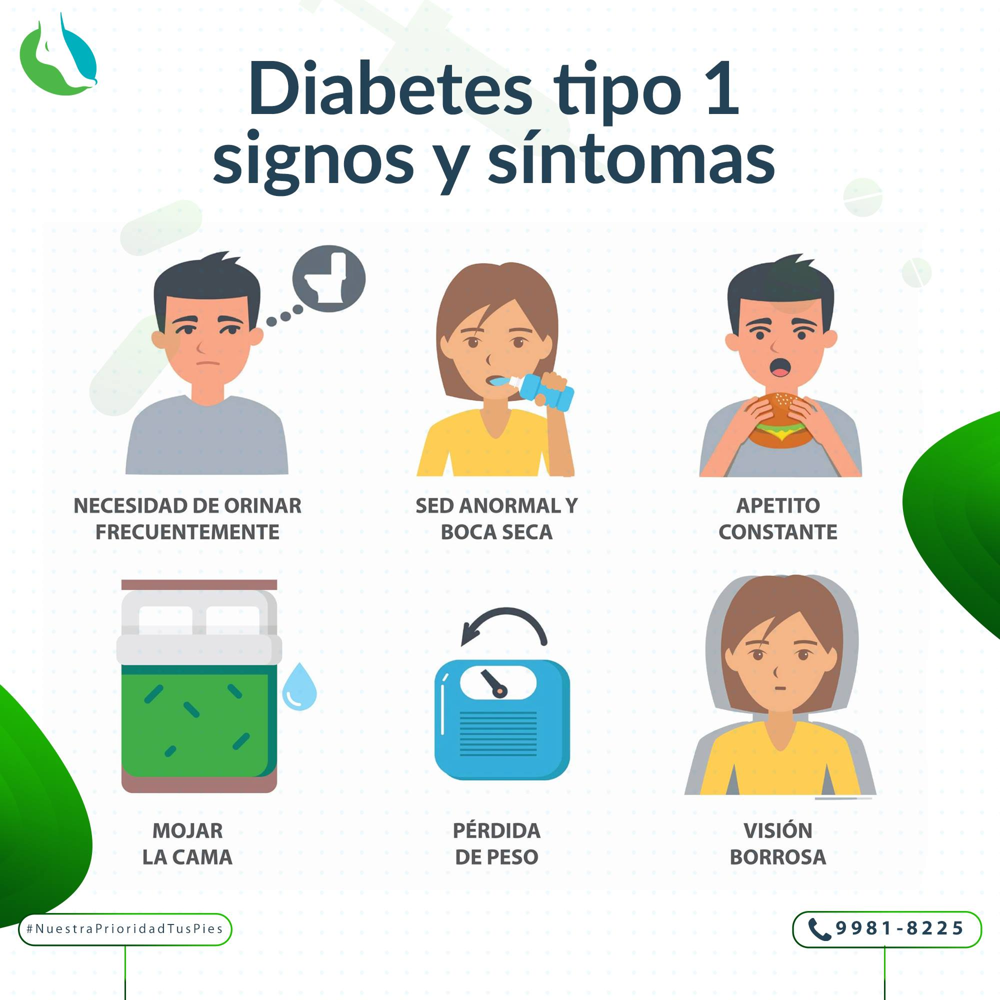
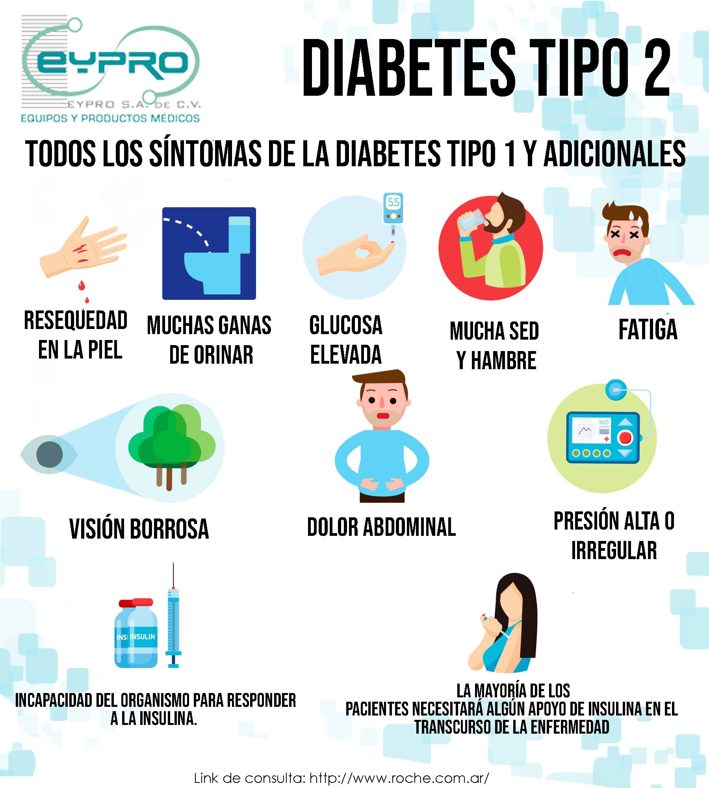

Síntomas de la diabetes tipo 1
La diabetes tipo 1 aparece generalmente en la infancia o adolescencia. Entre sus principales síntomas se encuentran:
- Sed excesiva y boca seca
- Pérdida de peso inexplicable
- Cansancio extremo
- Micción frecuente
- Visión borrosa
- Hambre constante
- Infecciones frecuentes

Síntomas de la diabetes tipo 2
La diabetes tipo 2 puede desarrollarse a cualquier edad y sus síntomas a menudo se presentan de forma más lenta:
- Aumento de la sed y hambre constante
- Cansancio excesivo
- Heridas que tardan en cicatrizar
- Visión borrosa
- Infecciones frecuentes en la piel
- Entumecimiento u hormigueo en las manos y los pies
